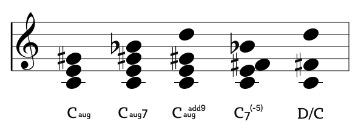

截至目前，旋律理论的核心始终是“”。在第I章中，我们将聚光灯打在Fa和Si的特殊性上；而在第III章中，即使借助临时记号也要制造出半音的台阶。然而本节要探讨的恰恰相反——我们将介绍一种完全不存在半音关系的全新音阶。
 1. 全音音阶（Whole Tone Scale）
1. 全音音阶（Whole Tone Scale）
说到消除半音关系的音阶，此前有过去掉Fa和Si的“五声音阶/去四七音阶”，但这一次更为极端。所有音程步进全部变为差，其名正是全音音阶（Whole Tone Scale）。

虽然每种音阶都有其独特之处，但这种“全部是全音差”的构造尤为特殊，这一点想必不难想象。
“纯全音”的特异性
音阶本应是通过全音与半音的交替组合孕育出丰富情感的。例如在旋律篇前文中我们曾提到，在“自然大调音阶”中，充分发挥“Si - Do”和“Mi - Fa”半音差所蕴含的力量，在旋律创作中至关重要。
而在全音音阶中，完全没有这种情绪起伏。它将一个八度机械地均分为6等份，是一种极其系统化、规则化的音阶。或许正因如此，这种音阶非常适合用来营造“无机感”、“失重”、“非人类/超现实”、“科幻（SF）”、“魔法”等氛围，并常出于这些意图被运用。哪怕仅仅将这个音阶级进上行，就能立刻散发出这种独特的氛围。
它在电视和游戏音效中也频繁登场，因此你可能在不知不觉中早就听过它了。
例如在《宝可梦 朱／紫》中，当宝可梦使用改变属性的不可思议力量“太晶化（Terastal）”时，其音效便是一段沿全音音阶极速攀升的乐句。对于音效设计师而言，这种音阶可谓必修知识。除了音效之外，作为乐曲的音阶，它也非常适合用于创作诡异、神秘氛围的BGM。
这首曲子出自《世界奇妙物语》中名为《猴爪大人（猿の手様）》的悬疑奇幻单元剧BGM。作为营造神秘诡谲氛围的手段，全音音阶的运用在其中堪称典范。
2. 与近代古典音乐的关系
全音音阶是近代古典音乐中的重要关键词之一。为了超越古典主义与浪漫主义时期构筑的传统调性音乐体系，德彪西（Debussy）和巴托克（Bartók）等作曲家曾积极采用它。
这是德彪西巧妙发挥全音音阶奇妙特质的作品（《帆》/ Voiles）。那种仿佛误入迷宫般飘渺浮动的氛围，正是来自全音音阶的魔力。
这是巴托克的使用范例。正如标题中直接包含“全音音阶”所示，整首曲子完全以全音音阶为主题创作而成。
此外，早在更早的时代，莫扎特就在《音乐的玩笑（Ein musikalischer Spass）》中，为小提琴乐句写入了全音音阶。正如标题所示，这是为了戏谑调侃技艺拙劣的小提琴乐手而故意设计的。
3. 流行/现代音乐中的范例
由于风格特征过于鲜明且曲风适用面较窄，它在流行音乐中并不常见，但在偏向前卫探索的“前卫摇滚（Progressive Rock）”等流派中偶能觅其踪影。
这是位列“前卫摇滚四大乐队”之一的深红之王（King Crimson）的曲目《Fracture》。整首曲子中大量充斥着全音音阶的乐句构型。
这同样来自四大前卫摇滚乐队之一——平克·弗洛伊德（Pink Floyd）的曲目《Dogs》。在吉他独奏后半段的展开推进行进中，全音音阶的乐句被作为画龙点睛的调味剂使用（13:56~）。
4. 编曲运用
话虽如此，当我们真打算运用全音音阶时，往往会不知道该如何构建和弦与旋律线条。但实际上，只要所有声部都限定在全音音阶内，接下来随性叠加乐句与伴奏，乐曲自然就能形成一种自洽的形态。
这是一个示例：在保持调性中心（Tonal Center）为C音的前提下，其余声部完全是随性叠置音符而成。根本无需在意彼时彼刻具体形成了什么和弦。你可能会惊呼“音乐理论都去哪了？！”，但恰恰从理论角度来看，我们才会发现对它过度深思其实并无太大意义。
首先在和弦构建方面，全音音阶中根本不存在构成大三和弦或小三和弦5度音所必需的【7个半音】距离关系。因为全音音阶中所有音都是全音步进，换算成半音数的话，任意两音组合的距离必定是偶数。因此仅凭该音阶的构成音，绝对无法拼凑出听感顺耳的传统大三/小三和弦。加之三全音（Tritone）频繁涌现，不稳定状态反倒成了常态。单凭这一点便能明白，我们此前学习的“大/小调环境下的紧张与舒缓理论”在此根本无法套用。 但另一方面，由于绝对不会产生半音差的关系，无论怎样叠置音符，都不会产生那种难以忍受的尖锐杂浊感。其结果就是，随意叠置音符就能立刻呈现出全音音阶特有的声响，反之亦然——想要在其内部制造出更多的差异或丰富个性反而十分困难。


在低音线条（Bassline）的进行上，传统的职能和声论在此同样失效，能够做出的展开与表现形式相当有限。能做的无非是基于“是否处于主音”的意识，在一定程度上微调稳定与不稳定的状态罢了。 而在旋律线条塑造方面，受“均等6分割”特性的支配，坦白讲无论怎么写都会听起来充满全音音阶的风味。在自然大调中，Fa和Si置于何处决定了个性，其解决的动向尤为关键；但在全音音阶中，这类要素极为稀薄。对此，除了主音意识，以及选择上行还是下行、级进还是跳进之外，在曲式与展开上几乎没有太多可通过传统理论进行切入的抓手。
综上所述，由于传统理论介入的余地不多，创作时反而更适合放手随性发挥。若勉强提几个实用要点的话，其一是三全音音程最能直观烘托出奇诡氛围；其二是利用大三度和声为旋律构建“三度合唱/叠音（3rd Harmony）”以加固旋律的技巧依然行之有效。这些可以说是编曲层面的核心关键。

特别是三度叠合，表面上看似遵循了听众耳熟能详的三度叠置音乐审美，实际上却全由大三度构成、绝无小三度现身，因此它在保持听觉协调的同时，又能将全音音阶那种异样离奇的气质烘托得淋漓尽致，堪称平衡感极佳的利器。
瞬间使用全音音阶的场合
若是在单一和弦上将其作为“秘密武器/突发重音”点缀使用，由于它天然包含大三度和属七度音程，因此在属七（Dominant 7th）类和弦上运用最为简便直接，例如 $V_7$ ，或是副属和弦 $II_7$、$III_7$ 等。

不过由于其中没有纯五度而是增五度，如果想让和弦与全音音阶完全契合，就需要使用和弦性质为“增大七和弦 / 属增七和弦（Augmented Seventh，例如 $7^{(\sharp 5)}$ ）”这一和弦篇第III章将涉及的进阶和弦。当然，仅在运用全音音阶的那一瞬间彻底忘掉和弦理论，来一场酣畅淋漓的离轨漫游，也同样妙趣横生。
总结
- 各音间步进全为全音、由6个音构成的音阶称为“全音音阶（Whole Tone Scale）”。
- 由于音程间隔均等，它不存在自然大调中“Fa、Si”那样定调乾坤的“关键倾向音”，朝向调性中心的引力结构在此极为淡薄。
- 正因这种特性，它极其适合用来营造离奇诡秘的氛围或科幻感（SF感）。